Trip to Uxmal & Kabah (03.May.2022)
Visit to Uxmal and Kabah
Uxmal and Kabah are the locations of Mayan ruins to the southwest of Merida, close to the Yucatan-Campeche boarder. These ruins are in the higher elevation and hillier part of the Yucatan. Uxmal was one of the larger Mayan cities and was connected to other population centers with elevated roads made from the limestone bedrock. Access to cenotes was more limited in this area, and at Kabah rain water was collected and stored in underground cisterns. Captured rain was also the source of water at Uxmal, but I did not see any direct evidence for this when I visited the site. The Mayan rain god and many animals associated with water (e.g. turtles and salamanders) are carved into the buildings.
Uxmal photos
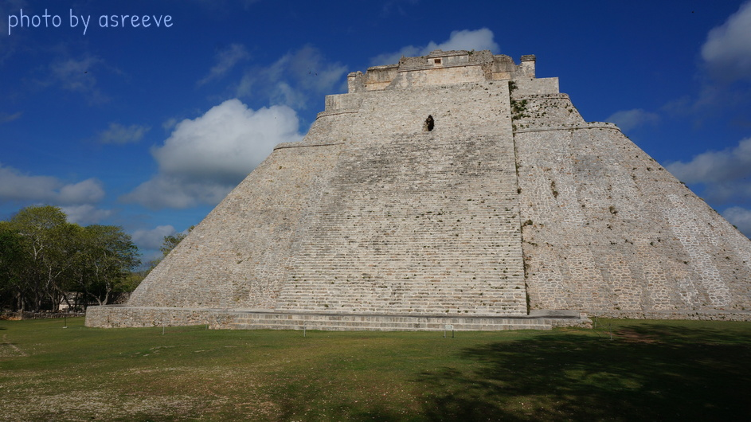
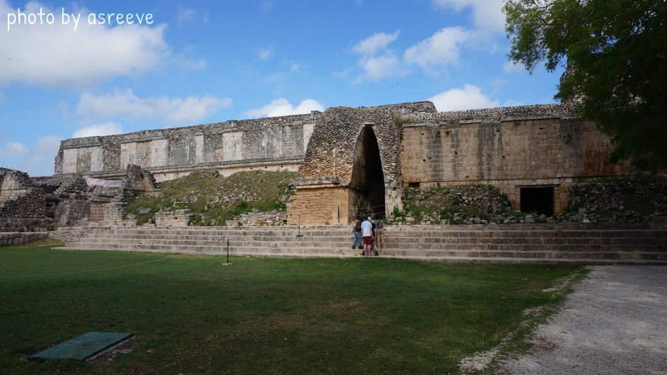
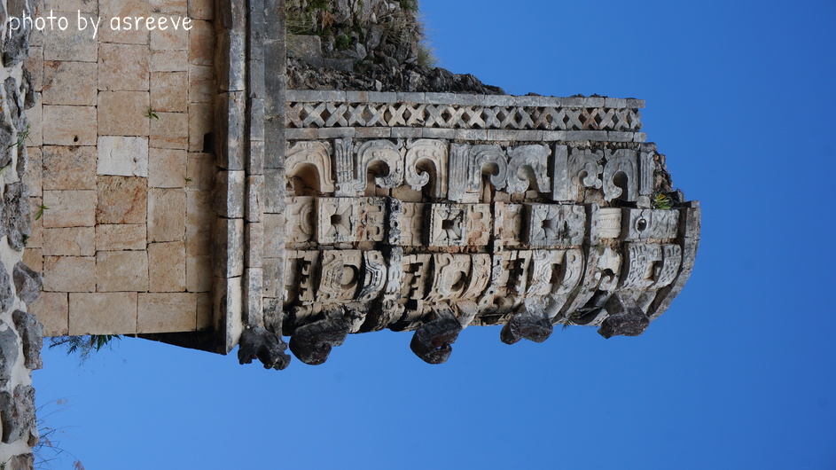
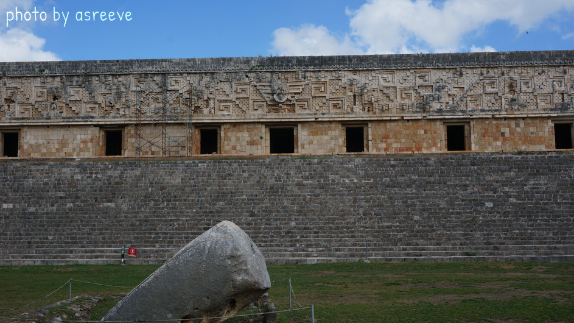
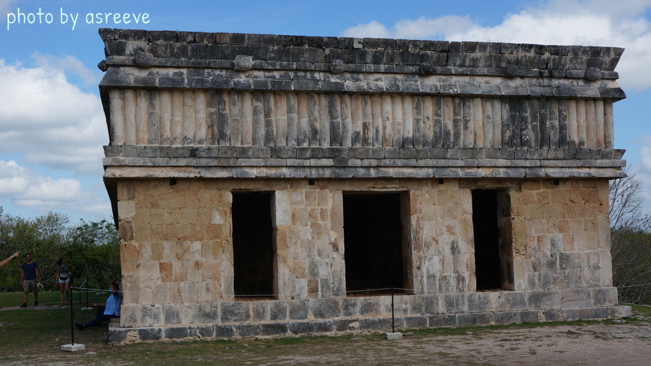
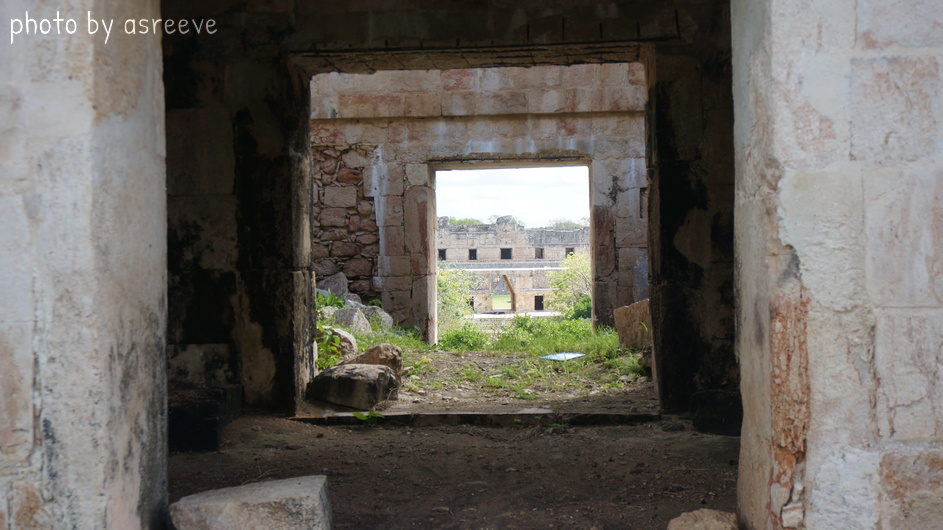
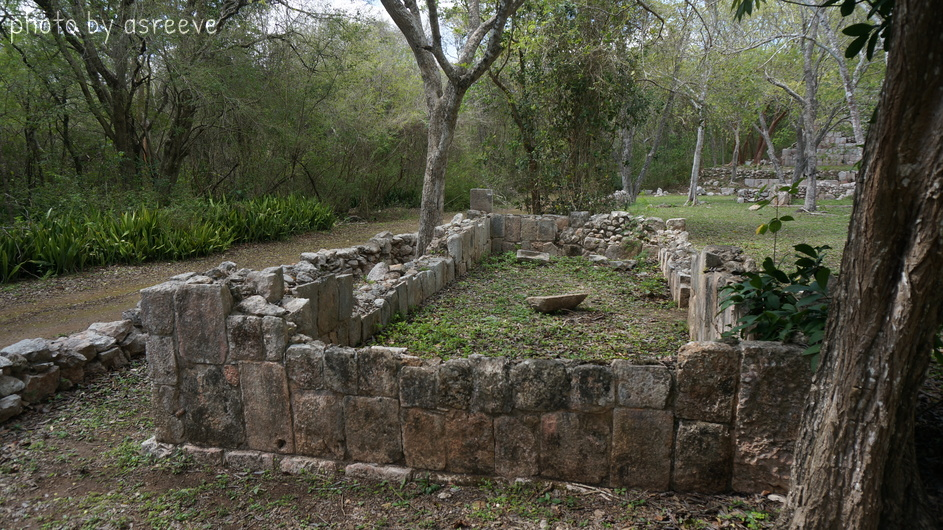
Photos of Kabah
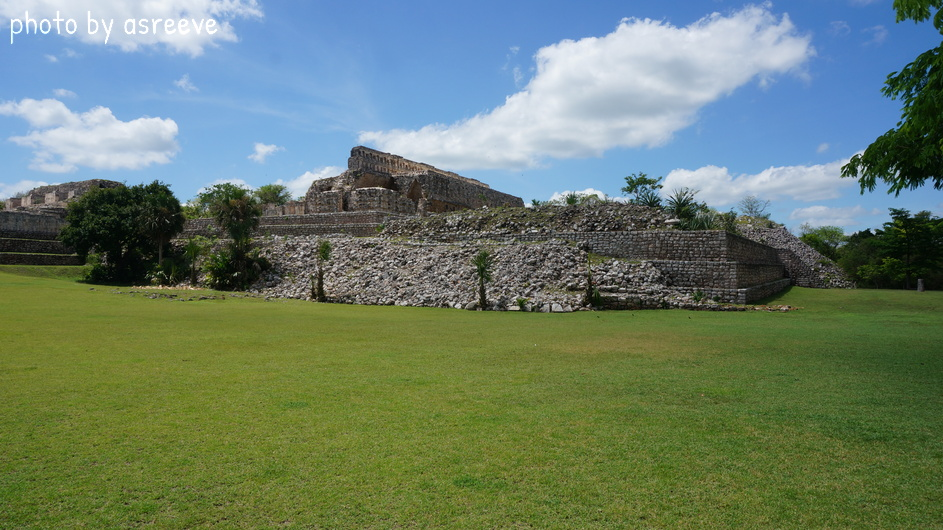
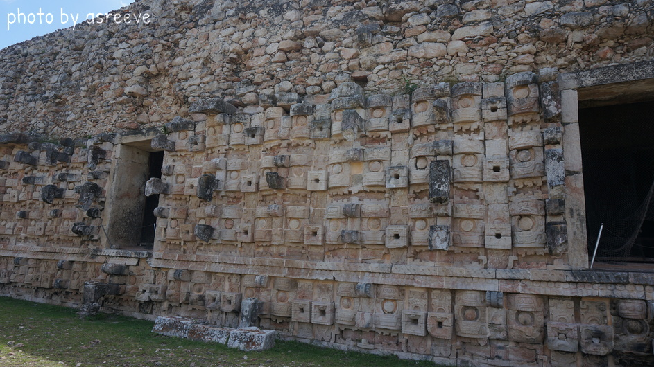
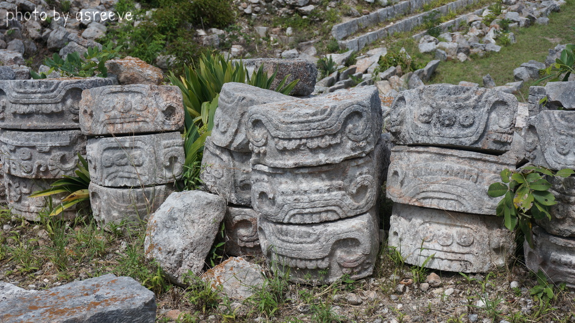
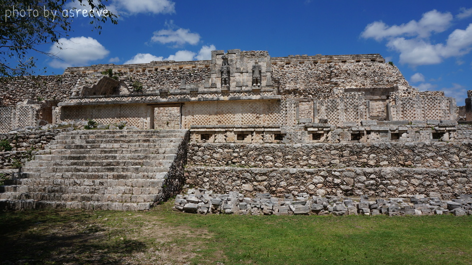
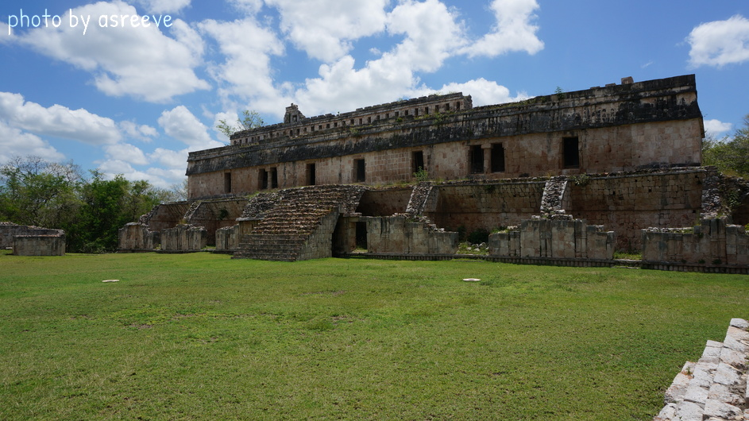
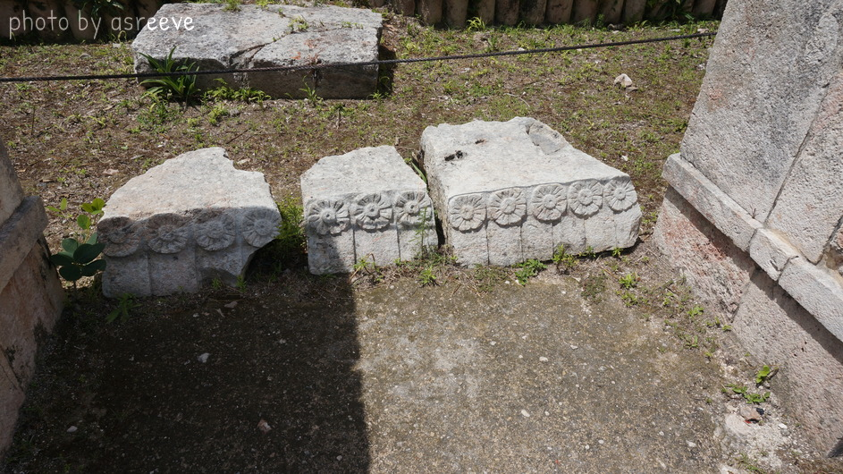